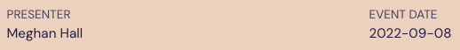

I’ve been a devoted Quarto user for nearly two years and finally (!) got around to moving my website over to Quarto. (In my defense, I spent 2023 not doing anything “extra” outside of work and enjoying my new baby girl.) This post is not meant to be a comprehensive guide to creating or moving a Quarto website—there are, among many others, great ones here on moving from distill and here on moving from blogdown—but rather a collection of things I had to figure out as a fairly experienced Quarto user moving my website over from Hugo Apéro/blogdown.
Site organization
First things first: where do all the files go? My Quarto website structure is fairly similar to the Hugo/blogdown structure, only even simpler. Before, I had a content folder that held blog and talks folders; now those folders are right at the root of the website.
Here’s what’s included:
_quarto.yml: YAML options for the overall websiteindex.qmd: file for the homepage404.qmd: my own 404 page in case someone finds a broken linktheme.scss: CSS for the theme of my websiteblog/andtalks/: described belowstatic/: described below_site/: what Quarto creates when it renders the site and what Netlify builds off of_freeze/: what Quarto creates when you setfreeze: autoto avoid rerunning code all the time_extensions/: what Quarto creates when you use extensions
blog and talks folders
Both of these folders contain an index.qmd file to specify the YAML options of the landing page, which lists all of the blog posts or talks. Here’s what mine looks like in the talks folder:
title: <p class="center-text">Talks</p>
author: ""
comments: false
listing:
contents: "index.qmd"
sort: "date desc"
type: "default"
date-format: "iso"
fields: [image, date, title, subtitle, author, summary, description, slides, extsite, repo]
page-size: 6
template: talk-listing.ejs
page-layout: full
title-block-banner: true
format:
html:
css: talks.cssThe listing section specifies which files should be included on the listings page: anything titled index.qmd in the folder and subfolders will get a listing. Mine are sorted descending by date, with six items per page, and I specify the layout of the page with the talk-listing.ejs file.
Listing templates
Controlling the look of my listing pages was the hardest part of the entire process! I don’t love the look of a standard listing page, but it was tough figuring out how to make changes. Quarto has some documentation on creating custom listings pages, but you need to create an EJS template, which I wasn’t familiar with. Per the documentation: EJS templates allow you to generate HTML using plain javascript, making it easy to loop through items and output their values in your custom HTML.
Normally, I would start with the code of the standard/default option and tinker around until I figured out how to change the elements I wanted. But the Quarto default templates were more complex than I needed and didn’t serve as a great starting point. So I went to option number two: adapt the work of people who know more than I do. I looked at lots of Quarto websites—specifically, lots of Quarto listings pages—in an attempt to find something custom that I liked well enough to use as a starting point. I liked the publications page of the AffCom lab at KU as well as the talks page on Andrew Heiss’s site. Looking at those templates (here and here) was enough to get me started.
The template for my blog is pretty simple with the title of the post, the publication date floated to the right, the categories, and the summary. The template for my talks page is similar but also includes buttons for any talk-related links I have like slides, a website, or a repo. The template files pull out the correct elements in the appropriate order from the YAML options of the index.qmd files, and then my .css pages create the style that I want for those listings.
Metadata files
Including a _metadata.yml file in both my blog and talks folder is useful to specify YAML options that should apply to all of the index.qmd files within those folders. This way I don’t have to, for example, add my name as the author in each file or specify my css file or customize my table of contents each time I write a blog post.
# Date format
date-format: "YYYY-MM-DD"
# Enable banner style title blocks
title-block-banner: "#1F2041"
# Add blog-post class to the banner header area
format:
html:
css: blog.css
knitr:
opts_chunk:
dev: png
dev.args:
bg: transparent
# Default for table of contents
toc: true
toc-title: CONTENTS
toc-location: left
freeze: true
# Default author
author:
- name: Meghan HallChanging metadata labels
This was one of those little things that fell into the “not necessary but would be nice” category. The standard metadata labels for author and date look like so:

This worked nicely for my blog posts, but for my talk pages, I wanted it to look more like the following:

I almost gave up more than once on this change since it was such a small detail, but I figured it out! And maybe there’s a simpler way to achieve this, but I supplied my own title-block.html file in the talks directory to more clearly specify the output of that title block.
I created my file based on my own website’s generated html for a blog post (which you can access on Chrome by right-clicking and selecting View Page Source), plus the standard Quarto title-block.html file.
Static files
My website has blog posts as well as landing pages for all of the talks I’ve given (the blog and talks folder, respectively, as described above), but it also needs to hold the various slide decks for all of those talks. When using blogdown, it was easy to drop all of that content into a static folder that you could link to from the root of your website.
But where should those files live within the Quarto structure? Netlify builds your Quarto site from the _site directory, but that directory rebuilds when you rerender your site. Google came to the rescue, and I followed Garrick Aden-Buie’s advice to write a little post-render script.
The post-render section of my _quarto.yml code instructs Quarto to copy everything in my static folder over to the _site folder after everything has finished rendering.
project:
type: website
render:
- "blog/**/*.qmd"
- "talks/**/*.qmd"
- "index.qmd"
- "blog/index.qmd"
- "talks/index.qmd"
- "404.qmd"
post-render:
- "cp -r static/. _site/"The period after static/ is important because I want those files (most of which are contained in a slides directory) to be copied directly over to the root of my website in the _site folder without the static folder itself. That way the links are formatted like slides/rstudioconf, not static/slides/rstudioconf.
Redirects
When migrating your website over to Quarto, chances are some of your links might change. For example, on my old website a sample link for a talk might be /talk/rladiesparis/, but now I’ve changed it to /talks/2022-09-08-rladies-paris/. I have those old links floating around on Twitter and on other websites, so I’d like to make sure that they still work and point to the new links. Enter: redirects.
If you use Netlify (which I highly recommed, as the Quarto/GitHub/Netlify integration is so seamless), you can supply a redirects file that lists all the old urls and their new locations. Netlify builds from Quarto’s _site directory, so just put the _redirects file (here’s mine) in your _site folder, right? I tried that first, but it doesn’t work because the _site directory rebuilds when you rerender your site. Instead, I moved my file into the static folder, which gets copied over to _site as described above.
My use case here for redirects is pretty simple: I had a small number of urls to switch, and I don’t expect to frequently add to that list. If your situation is more complicated and/or you want that _redirects file to automatically generate shorter urls when you create new pages, there are options described here and here.